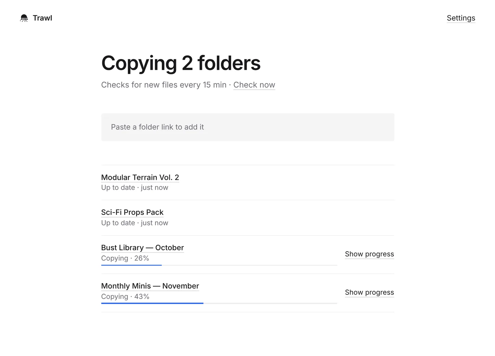
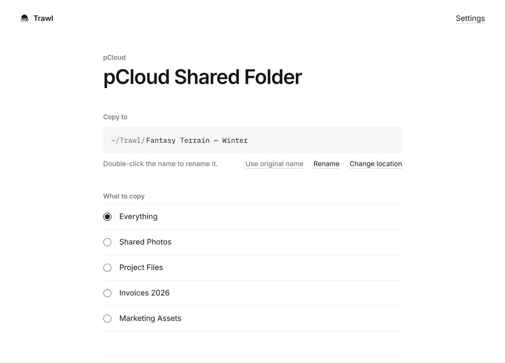
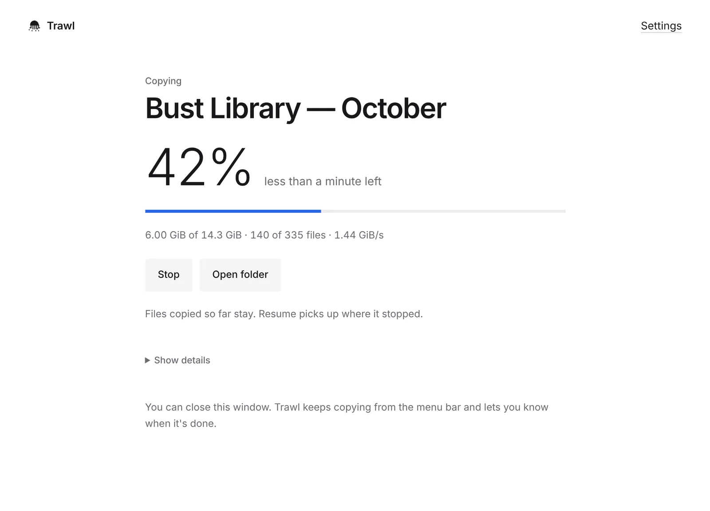
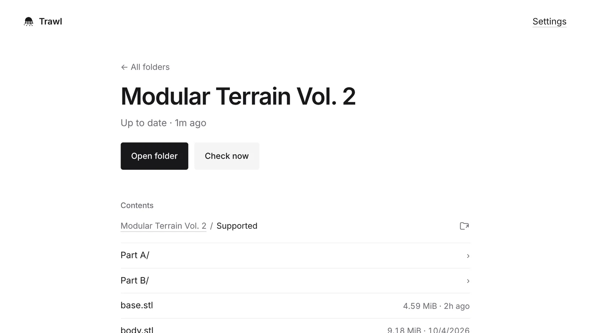

Keep a copy of any shared folder.
Paste a Google Drive or pCloud folder link. Trawl copies it to your computer and keeps it up to date. It only ever adds files — it never deletes anything.
brew install --cask kurenn/tap/trawl
A copy that looks after itself.
Point Trawl at a shared folder once. From then on it checks for new files and brings them home, without touching anything already there.
Paste a link
A Google Drive folder link or a pCloud public link is all it needs. Look inside and pick what to copy before anything moves.
See it copy
How far along it is, how much is left and how long it will take — for every folder.
Stays up to date
Trawl checks for new files on a schedule you choose. Copies are incremental, so a check with nothing new is quick.
Never deletes
Copies only add files. Nothing at your end is ever removed, and your own edits are kept safe instead of being overwritten.
Browse what you have
Look through any folder's files from inside Trawl, open a file, or jump to the folder in your file manager.
Problems come with a fix
A drive that isn't connected or a folder that loops back on itself shows what happened and a one-click way to carry on.
Nothing else to install
The copying engine, rclone, ships inside the app. Install with Homebrew or a one-line script.
Yours, privately
No accounts and no tracking. Your Google sign-in stays on your computer.
From link to library in three steps.
Trawl only ever pulls: no uploading, no two-way sync, and nothing deleted at your end.
Paste a folder link
Trawl shows what's inside. Choose everything or one subfolder, and rename where it lands if you like. Google Drive asks you to sign in once; pCloud links need nothing.

Let it copy
Watch the progress or close the window — Trawl keeps going in the menu bar. Stopping keeps everything copied so far.

Open what arrived
Every folder has its own page: browse its files, open them, and see where it lives on your computer.

Install Trawl.
Everything it needs is inside the app.
brew install --cask kurenn/tap/trawlcurl -fsSL https://raw.githubusercontent.com/kurenn/trawl/main/scripts/install.sh | bashNot notarized yet: Homebrew and the installer clear the macOS quarantine for you. On first launch, paste a folder link — Google Drive asks you to sign in, pCloud links don't.
Free, open source, and yours to keep.
MIT licensed. Trawl only reads from the shared folder and writes to your disk.